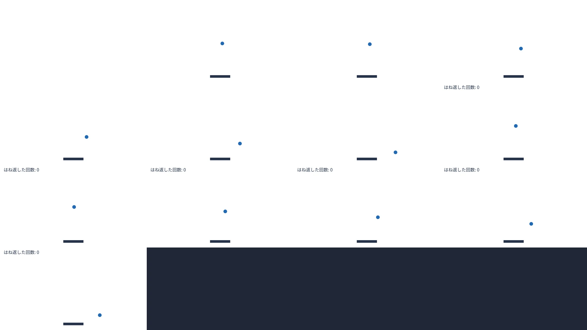
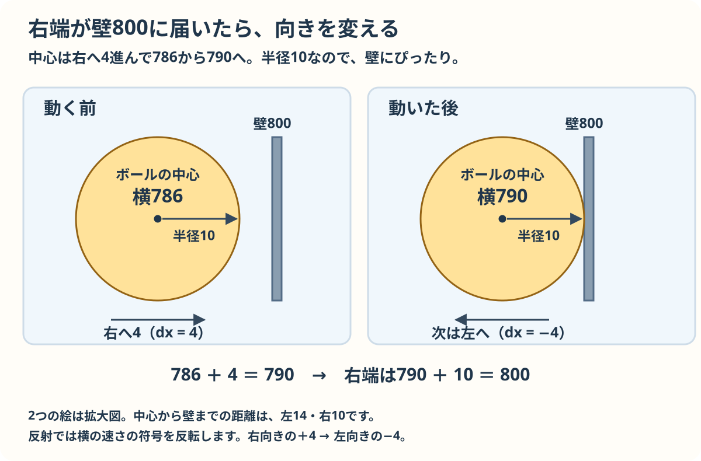
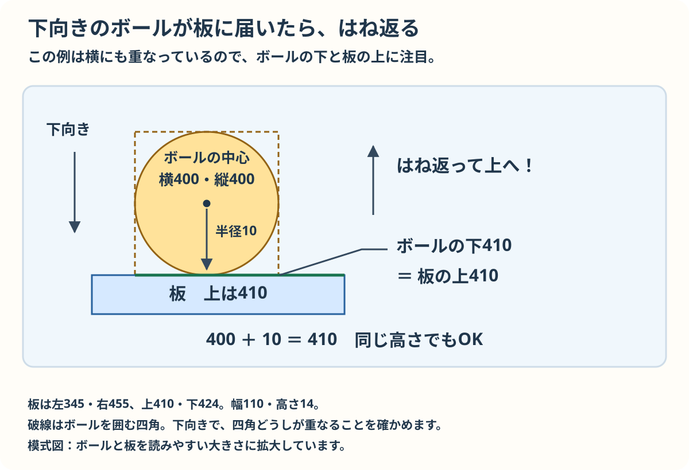

ボールをはね返すゲーム
初心者向け
変数、if 文、関数と Canvas の基本の描画を知っている人向けです。 座標の更新、キー操作、壁と板での反射を学びます。
左右の矢印キーで板を動かし、ボールを受け止めます。落としたら R キーで再挑戦できます。
始める前に
ZIPを展開してできたフォルダーでindex.htmlを開きます。ZIPにはひな型の3ファイルが入っています。
WindowsでZIPを展開する（動画）
3つのファイルは同じフォルダーに入っています。
各ステップでは作業用フォルダーの script.js を開き、示した部分を順番に置き換えます。index.html と style.css は変更しません。保存したら作業用の index.html をブラウザで開き、すでに開いている場合は再読み込みしてください。見本は別のページで開けます。
start() は最初の設定、update() は動きや判定、draw() は描画を担当します。最後の gameLoop() は更新と描画を繰り返します。
ステップ 1：ボールを動かす
このステップの見本を図で見る

このステップの見本
この行を足す前 変わったコードの一例（script.js）
x = 400; y = 225; dx = 4; dy = 4; paddleX = 345;
見本で確かめること
ボールが四方の端ではね返ることを確かめます。
保存してゲーム画面を更新する（動画）
index.html を再読み込みします。目標
目標：ボールを動かし、画面の端で反射させます。
確認欄までは準備中です。作業を順に進め、確認欄で保存して動作を確かめます。
書く場所と置き換えるコード
位置と大きさを用意する
作業用フォルダーの script.js で、次の範囲を探して置き換えます。
置き換える範囲
"use strict";
const canvas = document.querySelector("#game-canvas");
const ctx = canvas.getContext("2d");
置き換えるコード
"use strict";
const canvas = document.querySelector("#game-canvas");
const ctx = canvas.getContext("2d");
let x, y, dx, dy, paddleX;
const radius = 10, paddleWidth = 110, paddleY = 410;
変数は値に名前を付けて覚えるものです。x と y はボールの中心、dx と dy は1回の更新で進む横と縦の量です。paddleX は板の左端、radius は半径、paddleWidth は板の幅、paddleY は板の上端です。
初めの位置と速さを決める
作業用フォルダーの script.js で、次の目印を探し、その直後に書きます。
目印
function start() {
書き足すコード
x = 400; y = 225; dx = 4; dy = 4; paddleX = 345;
= は右の値を左の変数に入れ、; は文の区切りです。中心を (400, 225) に置き、横と縦にそれぞれ4ずつ進めます。画面では右と下が正の方向です。板の左端は345です。
位置を更新する
作業用フォルダーの script.js で、次の目印を探し、その直後に書きます。
目印
function update() {
書き足すコード
x += dx; y += dy;
+= は右の値を足して戻します。たとえば x が400、dx が4なら更新後は404です。dy も同じように y に足します。
壁で向きを変える
作業用フォルダーの script.js で、次の目印を探し、その直後に書きます。
目印
x += dx; y += dy;
書き足すコード
if (x <= radius || x >= canvas.width - radius) dx = -dx;
if (y <= radius) dy = -dy;
if (y >= canvas.height - radius) dy = -dy;
|| は「または」です。左右の壁では横の速さ、上下の壁では縦の速さの符号を反転します。右向きの4を−4にすると次は左へ進みます。半径を使うのはボールの端が壁に届いたときに反射するためです。

説明用の例です。中心が x = 786、速さが dx = 4。移動後は x = 790 になり、半径 10 の右端が画面の右端 800 に届きます。dx = -4 になり左へ進みます。
ボールと板を描く
作業用フォルダーの script.js で、次の範囲を探して置き換えます。
置き換える範囲
function draw() {
ctx.clearRect(0, 0, canvas.width, canvas.height);
}
置き換えるコード
function draw() {
ctx.clearRect(0, 0, canvas.width, canvas.height);
ctx.fillStyle = "#2269b4";
ctx.beginPath(); ctx.arc(x, y, radius, 0, Math.PI * 2); ctx.fill();
ctx.fillStyle = "#26334a";
ctx.fillRect(paddleX, paddleY, paddleWidth, 14);
}
ctx はひな型で用意した描画の道具です。fillStyle は色を設定します。arc() は中心と半径から円の道筋を作り、fill() で塗ります。fillRect() は板の左上、幅、高さ14で四角を描きます。
保存後の確かめ方
ボールが四方の端ではね返ることを確かめます。 ステップ 1 の見本を開く
小さな練習
dx の初期値を変えて速さを比べます。 練習後はこのステップのコードに戻してから次へ進んでください。
ステップ 2：板を左右に動かす
このステップの見本を図で見る
このステップの見本
この行を足す前 変わったコードの一例（script.js）
if (left) paddleX -= 7;
見本で確かめること
左右の矢印キーで板が動き、画面の端で止まることを確かめます。
目標
目標：矢印キーで板を操作します。
確認欄までは準備中です。作業を順に進め、確認欄で保存して動作を確かめます。
書く場所と置き換えるコード
キーの状態を記録する
作業用フォルダーの script.js で、次の目印を探し、その直後に書きます。
目印
const radius = 10, paddleWidth = 110, paddleY = 410;
書き足すコード
let left = false, right = false;
false は押されていない状態です。押すと true、離すと false に変えます。
押された方向へ動かす
作業用フォルダーの script.js で、次の目印を探し、その直後に書きます。
目印
function update() {
書き足すコード
if (left) paddleX -= 7;
if (right) paddleX += 7;
paddleX = Math.max(0, Math.min(canvas.width - paddleWidth, paddleX));
left が true なら板の左端を7減らし、right が true なら7増やします。Math.min() と Math.max() で板を画面内に収めます。
押したキーを覚える
作業用フォルダーの script.js で、次の範囲を探して置き換えます。
置き換える範囲
function gameLoop()置き換えるコード
window.addEventListener("keydown", (event) => {
if (event.key === "ArrowLeft" || event.key === "ArrowRight") event.preventDefault();
if (event.key === "ArrowLeft") left = true;
if (event.key === "ArrowRight") right = true;
});
function gameLoop()keydown はキーを押したときに起きます。左右の矢印なら preventDefault() でブラウザーの通常の動作を止め、対応する状態を true にします。
キーを離したことを覚える
作業用フォルダーの script.js で、次の目印を探し、その直前に書きます。
目印
function gameLoop()書き足すコード
window.addEventListener("keyup", (event) => {
if (event.key === "ArrowLeft") left = false;
if (event.key === "ArrowRight") right = false;
});
keyup で離したキーを false に戻します。
ウィンドウから離れたときに戻す
作業用フォルダーの script.js で、次の目印を探し、その直前に書きます。
目印
function gameLoop()書き足すコード
window.addEventListener("blur", () => { left = false; right = false; });
blur はウィンドウから操作が離れたときに起きます。左右の両方を false に戻します。
保存後の確かめ方
左右の矢印キーで板が動き、画面の端で止まることを確かめます。 ステップ 2 の見本を開く
小さな練習
板の移動量 7 を変えて動かしやすさを比べます。 練習後はこのステップのコードに戻してから次へ進んでください。
ステップ 3：板で反射して得点する
このステップの見本を図で見る
このステップの見本
let left = false, right = false;
変わったコードの一例（script.js）let left = false, right = false, score, over;
見本で確かめること
板に当たると回数が増え、落とすと終了します。
目標
目標：板で受け止め、落としたら終了します。
確認欄までは準備中です。作業を順に進め、確認欄で保存して動作を確かめます。
書く場所と置き換えるコード
得点と終了状態を用意する
作業用フォルダーの script.js で、次の範囲を探して置き換えます。
置き換える範囲
let left = false, right = false;
置き換えるコード
let left = false, right = false, score, over;
score ははね返した回数、over はゲームが終了したかを表します。
始めるときに戻す
作業用フォルダーの script.js で、次の目印を探し、その直後に書きます。
目印
x = 400; y = 225; dx = 4; dy = 4; paddleX = 345;
書き足すコード
score = 0; over = false; left = false; right = false;
得点を0、終了状態と左右のキーを false にします。R キーで start() を呼んだときも同じ状態に戻ります。
終了中は動きを止める
作業用フォルダーの script.js で、次の目印を探し、その直後に書きます。
目印
function update() {
書き足すコード
if (over) return;
over が true なら return で update() を終えるので、板やボールは動きません。
板に当たったか調べる
作業用フォルダーの script.js で、次の範囲を探して置き換えます。
置き換える範囲
if (y >= canvas.height - radius) dy = -dy;
置き換えるコード
if (dy > 0 && y + radius >= paddleY && y - radius <= paddleY + 14 &&
x + radius >= paddleX && x - radius <= paddleX + paddleWidth) {
y = paddleY - radius; dy = -dy; score++;
}
if (y - radius > canvas.height) over = true;
dy > 0 は下向きです。ボールと板が縦横の両方で重なるかを調べます。&& はすべての条件が成り立つときです。当たったらボールの下端を板の上端に合わせ、縦速度を反転し、score++ で回数を1増やします。ボールの上端が画面の下を越えると終了します。

説明用の例です。中心 (400, 400)、半径 10、板の上端 410。点線はボールを囲む四角です。下端と板の上端はどちらも410で、横方向の範囲も重なっています。絵は模式図です。
下向き dy > 0 に加え、y + radius >= paddleY、y - radius <= paddleY + 14、x + radius >= paddleX、x - radius <= paddleX + paddleWidth を確かめます。
回数と終了の文字を描く
作業用フォルダーの script.js で、次の目印を探し、その直後に書きます。
目印
ctx.fillRect(paddleX, paddleY, paddleWidth, 14);
書き足すコード
ctx.font = "24px sans-serif";
ctx.fillText("はね返した回数: " + score, 20, 35);
if (over) ctx.fillText("ゲームオーバー！ R キーでもう一度", 180, 225);
font は文字の大きさと書体を設定し、fillText() は文字を指定した座標に描きます。+ で文字と回数をつなぎ、終了時だけゲームオーバーの文字を描きます。
R キーで初期状態に戻す
作業用フォルダーの script.js で、次の目印を探し、その直後に書きます。
目印
window.addEventListener("blur", () => { left = false; right = false; });
書き足すコード
window.addEventListener("keydown", (event) => {
if (event.key.toLowerCase() === "r") start();
});
toLowerCase() で小文字にしてから r と比べ、start() で状態を戻します。gameLoop() を再び呼ぶとループが二重になるため、ここでは呼びません。
保存後の確かめ方
板に当たると回数が増え、落とすと終了します。R で初期状態に戻ります。 ステップ 3 の見本を開く
小さな練習
paddleWidth を変えて難しさを比べます。 練習後はこのステップのコードに戻してから次へ進んでください。